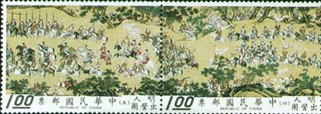
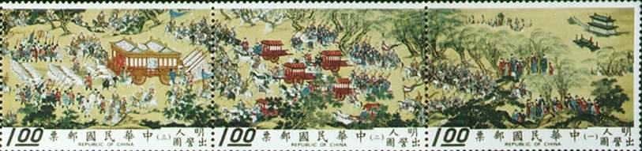
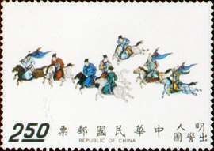
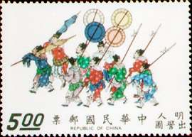
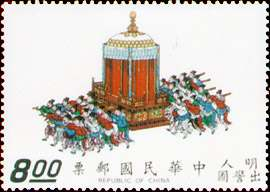
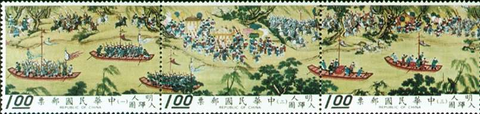
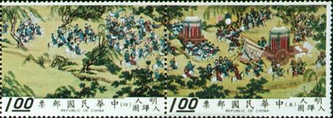
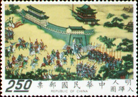
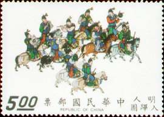
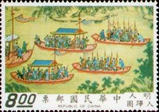

The Emperor's Procession
Departing from the Palace
Hand Scroll Postage Stamps (1972)
The two most famous hand scrolls of the painting academy of the Ming dynasty (AD 1368-1644) are entitled The Emperor's Procession. Formerly kept in the Ching Forbidden Palace, they are now in the collection of the National Palace Museum. Taipei, Taiwan, Republic of China. The imperial procession pictured on the two hand scrolls is a presentation of a journey taken by the Ming Emperor Shih-tsung (the 12th emperor of that dynasty reigned 1522-1566) from his palace in Peking (now Beiping) to visit the imperial tombs at Cheng-tien in Hupeh province, and his return to Peking. In the first of the two hand scrolls, called Departure, the procession departs from the palace for the imperial tombs by land route, men and horses in procession, moving from right to left. In the second, called "Return," they return from the imperial tombs to the palace via waterway, moving from left to right. Watercolor and ink were used in the painting of these two silk hand scrolls. The height of both paintings is 92.1 cm.

$1.00. Emperor under two canopies. $1.00. Procession.

$1.00. Carriage drawn by 23 horses. $1.00. Seven carriages $1.00. Emperor Shih-tsung's procession.
 |
 |
 |
$2.50. Messengers on Horseback. $5.00. Guards with flags, fans and spears. $8.00. Sedan chair carried by 28 men
The Emperor's Procession
Departing from the Palace
Hand Scroll Postage Stamps (1972)
Issuing dates: June 14, and July 12, 1972. Perforation: 13 1/2. Dimension (mm): 51 x 36. Process: Photogravure. Photographer: Liu Pao-chin. Paper: Photogravure stamp paper. Printer: Printing Bureau of the Ministry of Finance, Japan. Scott: 1776-1784.
Each of these two installments consists of a strip of five stamps depicting part of the overall procession and three close-up singles revealing some significant views.

$1.00. Three barges. $1.00. Procession, sedan chairs. $1.00. Two barges with trunks.

$1.00. Procession on land. $1.00. Procession, two sedan chairs.
 |
 |
 |
$2.50. Courtiers at city welcoming Emperor. $5.00. Orchestra on horseback. $8.00. Barges.